05 / 2020
Atomic
Ski
Visualizing and documenting nordic and alpine boot designs, shaping color, material, and finish, and exploring new directions for winter sports footwear.
- Year
- 2020
- Context
- Atomic Austria
- Duration
- Six months
- Practice
- Market research, Design management, Footwear design, Ideation and concept development, Design for manufacturing, Creation and adjustments of tech packs, Packaging design, Product visualizations
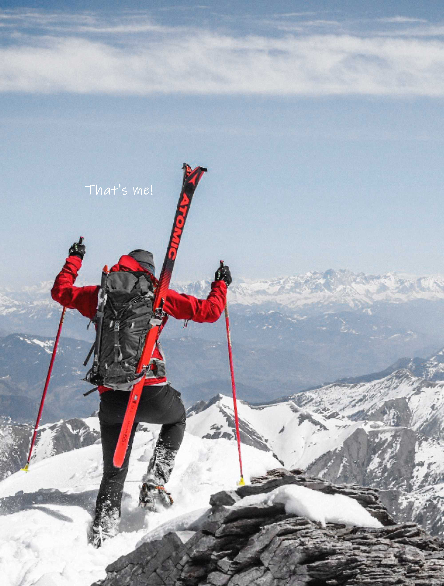
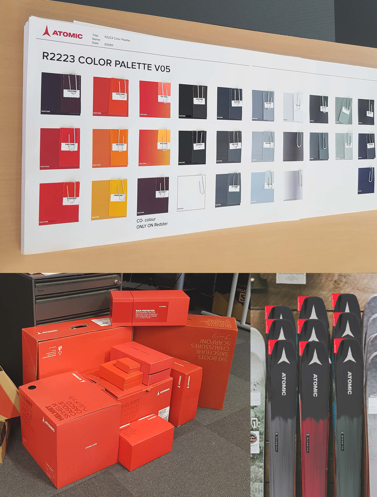
Actively contributed to CMF development for future seasons by coordinating materials, matching color shades across various components, and ensuring consistency across product range and packaging.
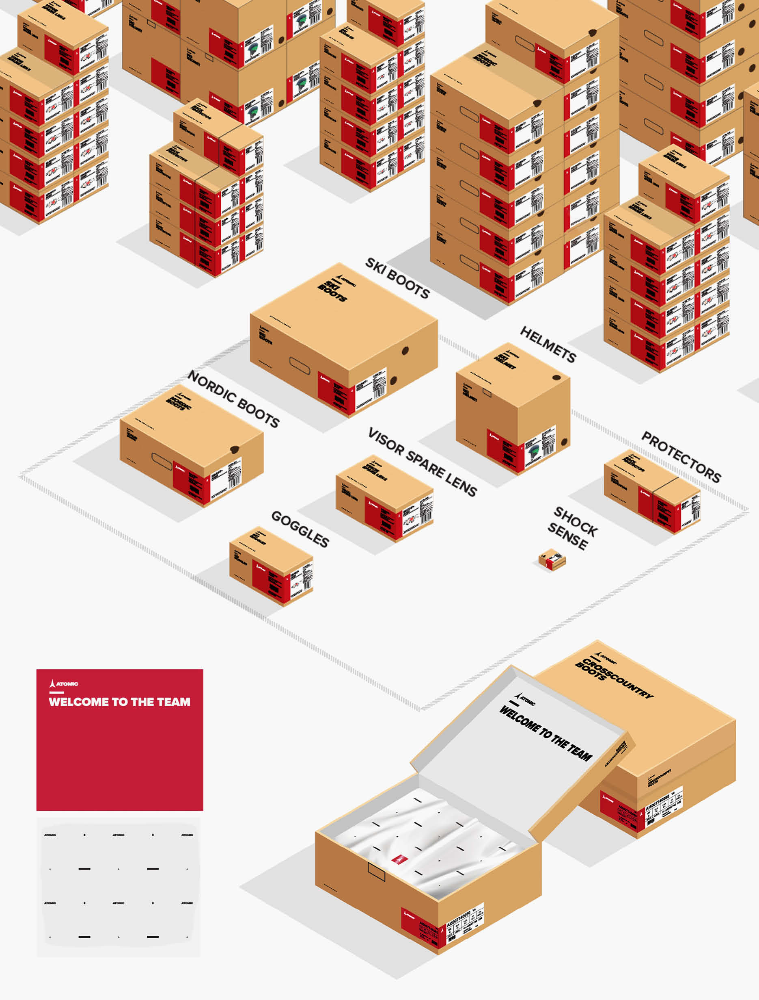
Analyzed the existing packaging and developed new concepts and variations for cardboard boxes, wrapping paper, and ski stickers. Conducted print tests and mockups, ensuring adherence to CI guidelines.
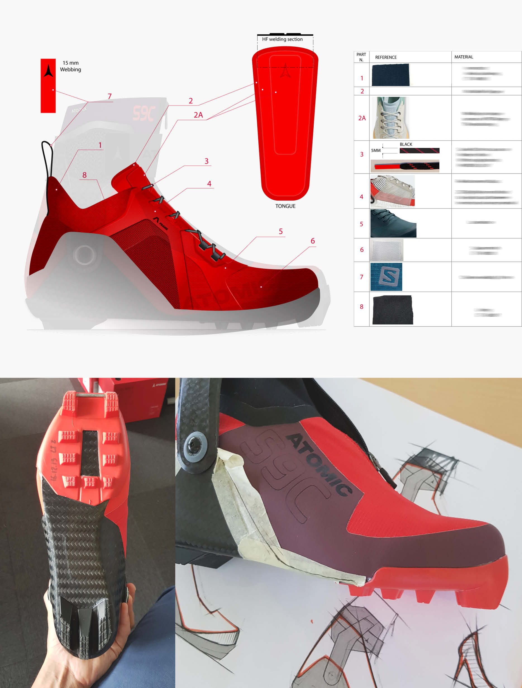
Created detailed vector tech packs and design guidelines for production, and developed and adapted technical design datasheets. All work was done in close coordination with the Head of Design and the respective product teams.
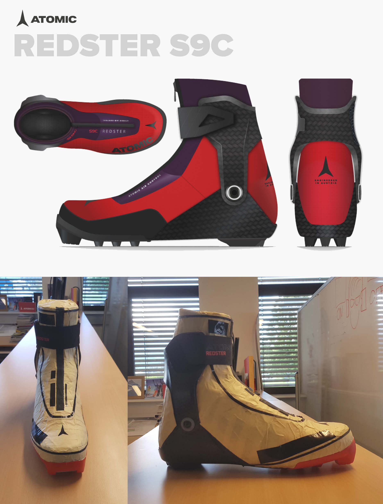
Defined break lines for future footwear designs and contributed to the redesign of soft and hard components. Converted physical prototypes into digital tech packs for production.
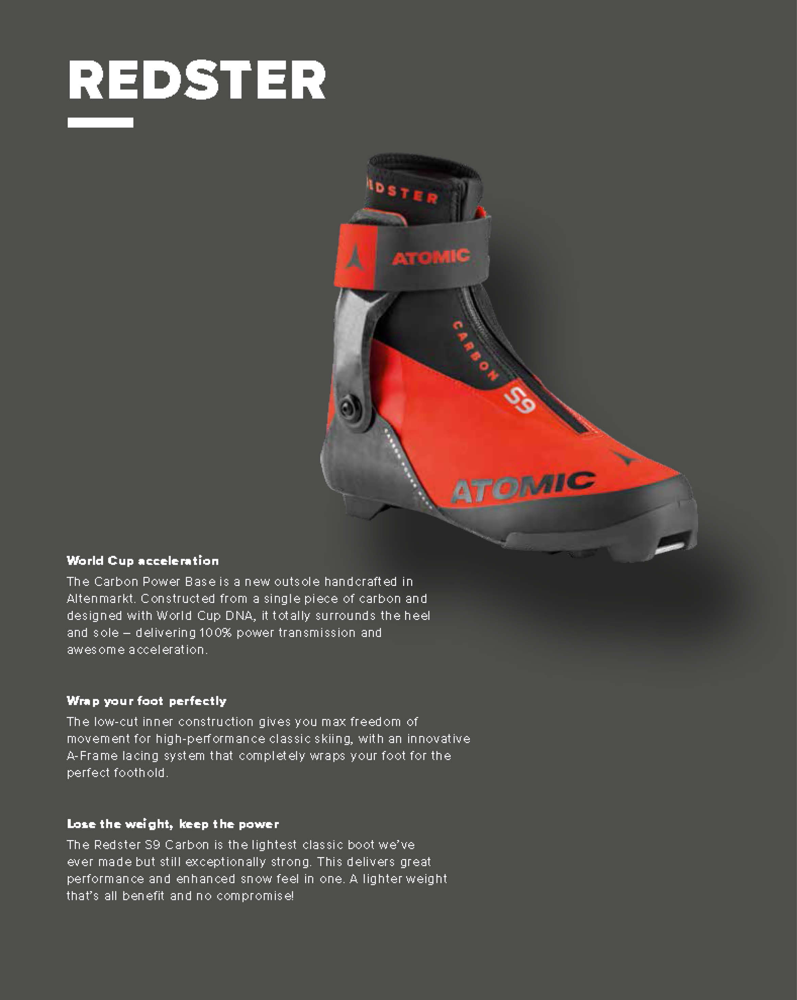
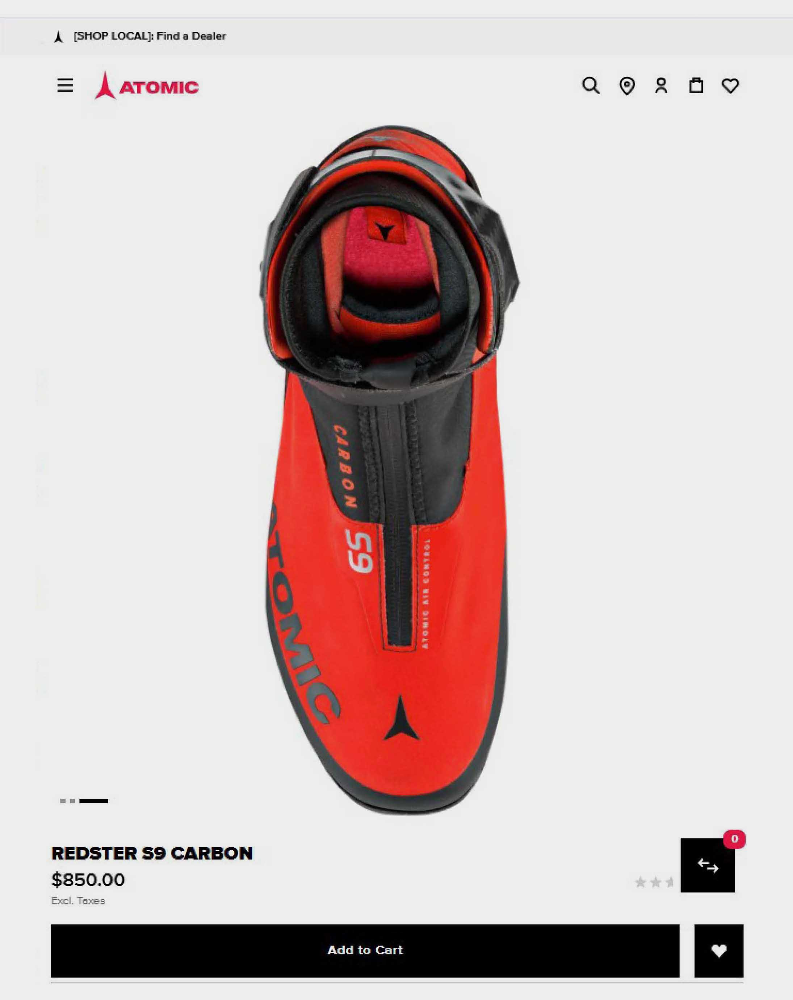
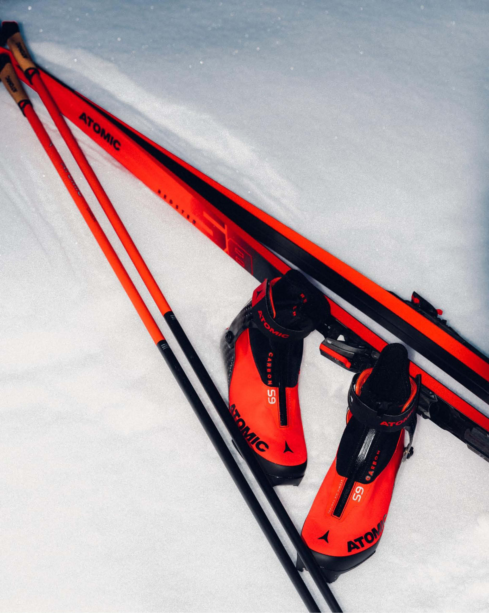
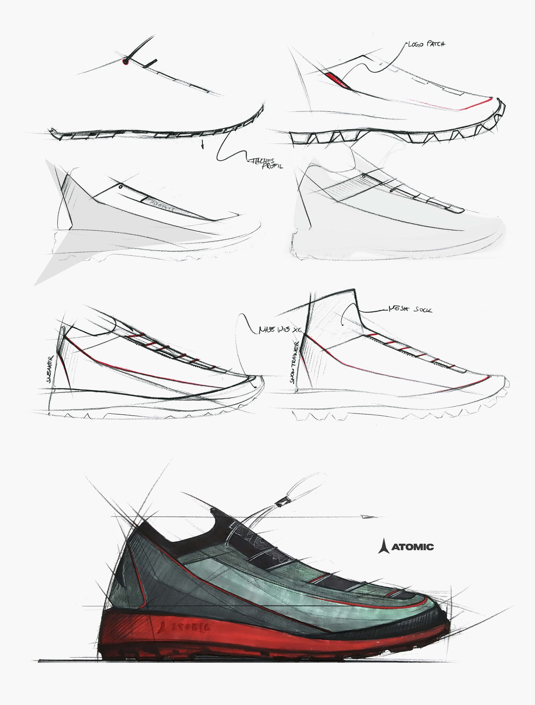
Early design sketches for creating a winter trainer in alignment with the Atomic line aesthetics. The design research phase was limited to two weeks.
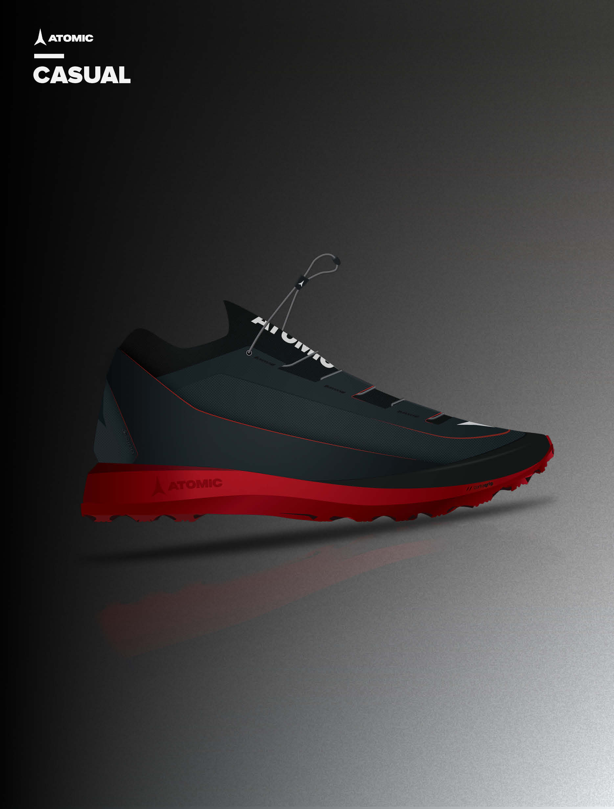
This is the proposal for the casual trainer variant. Images are vector renderings visualized in Illustrator.
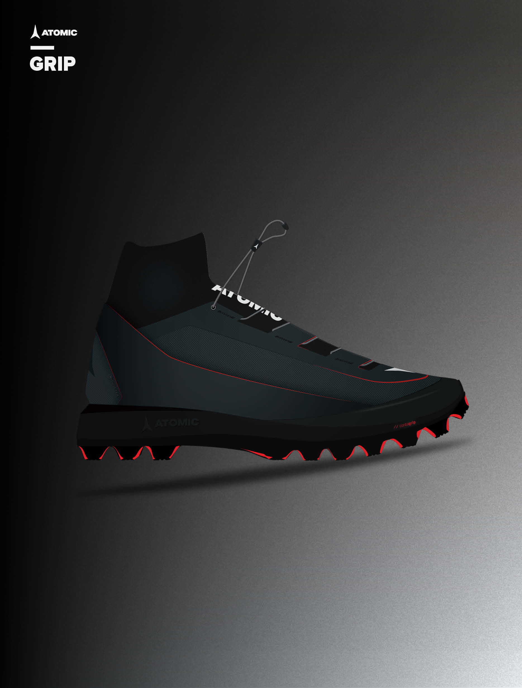
A variant featuring integrated socks and a high-top design for training in the snow.
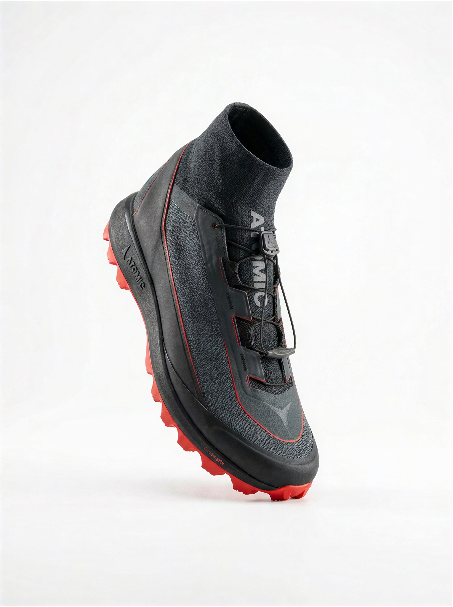
This image was created as part of a later exploration process and is not affiliated with the Atomic brand or products.